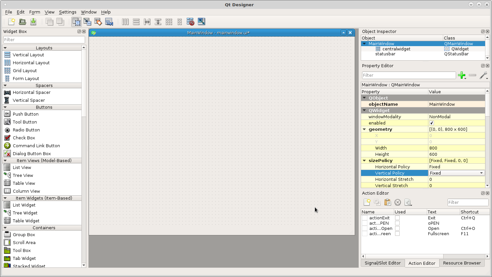
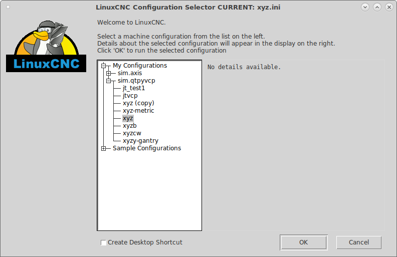
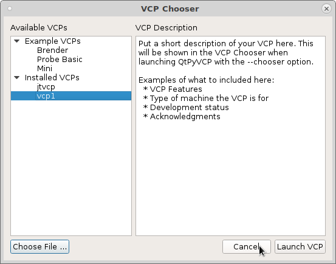
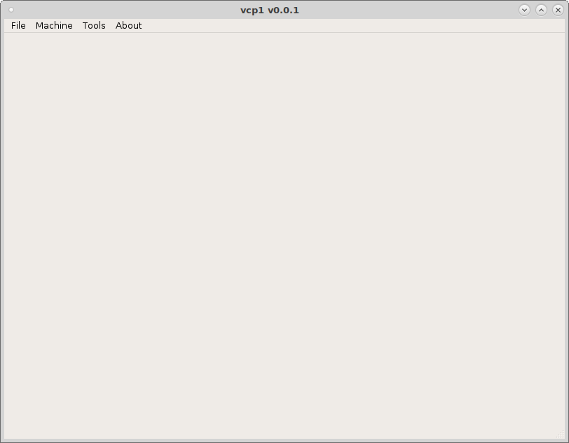
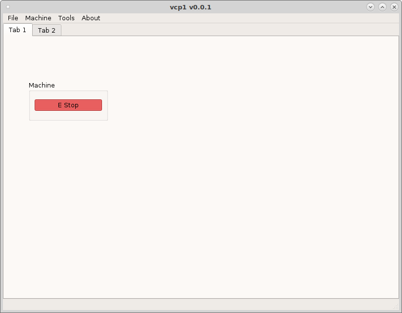
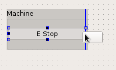
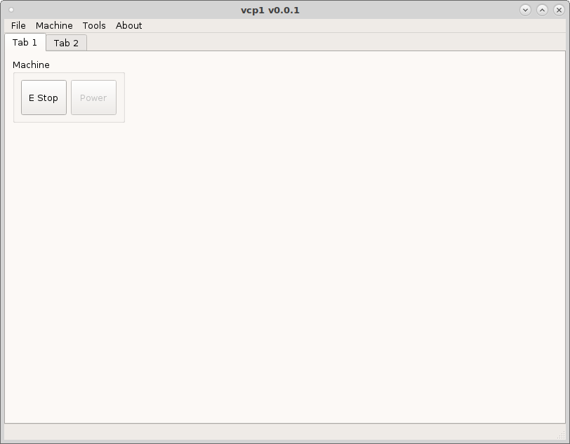

Making your first VCP¶
After installing and testing QtPyVCP clone the vcp-template then make a copy.
To copy the example template in a terminal run copy.sh and use a new name that contains only letters, numbers and the underscore _.
git clone https://github.com/kcjengr/vcp-template.git
cd vcp-template
./copy.sh
To edit the new template created from the vcp-template run the following. In this example the copied vcp-template was named vcp1.
editvcp vcp1
{kind=link}
Now we have a very basic VCP with only a few items in it. You can either delete everything but the main window and central widget and start from scratch or just add to the vcp-template. In this tutorial I’m going to start with a blank slate so we don’t miss any important details.
This example has to work on a small touch screen with a resolution of 800x600 so I set the main window size and the vertical and horzontal policy to fixed.
{kind=link}
Testing the VCP
To test your vcp start LinuxCNC and pick a configuration from sim.qtpyvcp
{kind=link}
then pick your VCP from the Installed VCPs.
{kind=link}
Now you can see a blank VCP with a menu added.
{kind=link}
Navigate to the new vcp location and open the config.yml file with a text editor. Here you can change the author, version, description.
The mainwindow.py is the file to add any custom methods.
The style.qss is a place to put css styles. In the following example it is for an ActionButton with the actionName of machine.estop.toggle and when it is checked change the background color to red. The important thing to note is the checked, by default an action button is not checkable so for this to work you must select that in the Property Editor.
ActionButton[actionName="machine.estop.toggle"]:checked{
background: rgb(239, 41, 41);
}
To make testing a bit faster in the ~/linuxcnc/configs/sim.qtpyvcp directory make a copy of xyz.ini and rename it vcp1.ini. In the [DISPLAY] section add VCP = vcp1. Now run the LinuxCNC configuration selector and pick vcp1 and check Create Desktop Shortcut. Now we can launch vcp1 with a single mouse click.
First Buttons
I added a tab widget to the central widget then added a Grid Layout. Right click
on the Grid Layout and morph it into a QGroupBox. Now drag an ActionButton into
the group box, add text and make it checkable. Now in the actionName add
machine.estop.toggle and save.
{kind=link}
Now run the vcp. When you toggle the E Stop button it should turn red when on and original color when off.
{kind=link}
Now add a second button for machine power to the group box. This may be a bit tricky to figure out at first but when you drag something into a layout either a blue line or a red box will indicate where the widget will be placed.
{kind=link}
In the actionName put machine.power.toggle and make sure checkable is
selected then save. When you run the vcp you can see the colors change on the
buttons as you toggle them. The styles that change the colors are in the
styles.qss file.
{kind=link}
Now because this is for a touch screen lets make the button size large enough to use with your fingers. In the property editor change the minimumSize Width and Height to 50 and save.
{kind=link}
Now because this is a touch screen VCP we want to hide the main menu bar. In the [DISPLAY] section add HIDE_MENU_BAR = True. See the INI options page for more info.
Or you can edit the config.yml file and change menu = ( default ) to
menu = null which is what I did for this tutorial. Now when you run the vcp
you can see the menu is gone.
{kind=link}